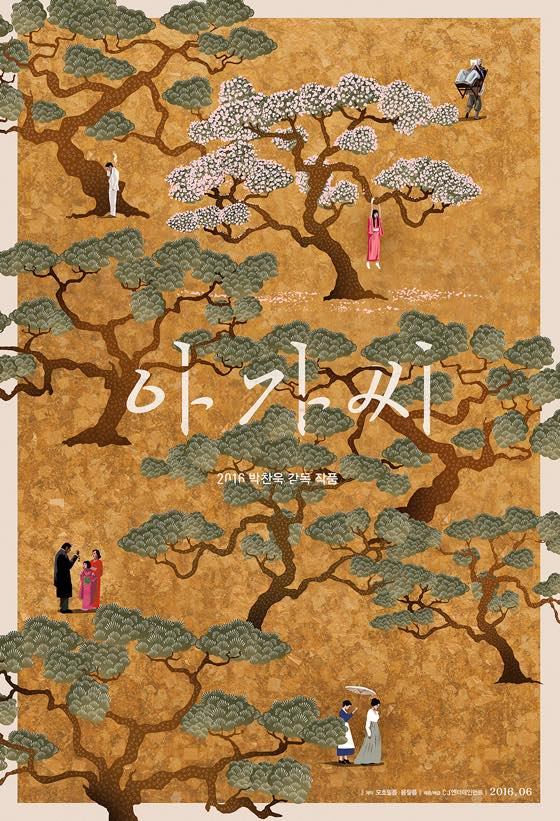

사랑과영혼 1990
비행기에서 제일 뒷쪽에 앉았는데 소음이 심해서 새로운 영화를 집중해서 볼수가 없었음.
해서 이미 본 영화들을 이것저것 돌려보다 사랑과영혼을 봤다.
데미무어 이쁘다.
빅 히어로 2014
전혀 내용을 몰랐는데 내가 생각한것보다 본격(?) 히어로 물이라서 놀랐음 ㅋㅋ
Brave 2012
한국 제목은 메리다와 마법의 숲
평이 그럭저럭이었던 기억이 있는데 잼나게 잘봄.
곰으로 변한 왕비의 표정과 제스처가 늠 훌륭했다 ㅋㅋㅋㅋ

김민희 늠 이쁘게 나온다. 김태리도 매력적 +_+
지루하지 않게 끝까지 잘 달린 느낌 :3
화면이 느므느므 이쁘다//
부산행 2016
역시 사람이 젤 무섭다 -_-;;
서울역 2016
부산행을 보고 서울역 애니메이션을 봄
몇몇 덜그럭 거리는 부분이랑 대사와 입모양? 타이밍이 안맞는 부분이 있어서 아쉽다.
굿바이 싱글 2015
잼나게 잘 봤지만 딱 한국영화 스럽다 ^^;;